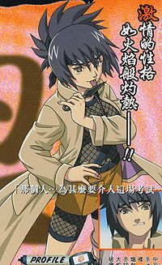

Anko Mitarashi
 De: La Frikipedia, la enciclopedia extremadamente seria.
De: La Frikipedia, la enciclopedia extremadamente seria.
un vici
| De la serie Naruto y sus movidas:
|
| Anko Mitarashi
|
| 
|
| Anko tiene una obsesion de chupar kunais(y otros tambien...)como se puede observar en la foto
|
|
| Aldea
|
Kon Hoja
|
| Nivel
|
examinadora,jonin o ANBU loca
|
| Tipo de chakra
|
Asesino
|
| Técnica favorita
|
Rompeventanas no jutsu
|
| Malo o Bueno
|
Psicópata
|
| Objetivo
|
Salir en más hentais que las otras kunoichis (superando a esa miniprosti rubia
|
| Notas
|
tiene el chupeton maldito en el cuello ya que fue victima de los abusos sexuales de Porrochimaru
|
Historia
Es la examinadora de la segunda prueba del examen de chūnin, como anunció al final de la primera prueba de forma muy teatral. Anko es alegre y a veces hiperactiva, lo que la hace similar a Naruto en algunos aspectos.
Durante el examen, llega a pelear contra cierto drag-queen Porrochimaru y se revela que éste fue una vez su sensei. Anko, junto a otros nueve, fue marcada por primera vez con el sello maldito del sannin, y fue la única que sobrevivió, estableciendo la probabilidad de supervivencia en una décima parte. Orochimaru, luego, la rechaza como subordinada, creyendo que no tenía la sed de poder y venganza que se necesita para ese sello, y se desprendió de ella. Orochimaru fue capaz de volver a despertar su sello en el Bosque de la Muerte, llenándola de dolor y acabando así la pelea, con lo que pudo escapar. Le había enseñado muchas de sus técnicas prohibidas, entre ellas la invocación de serpientes, como muestra en una saga de relleno muy relacionada con su pasado.
En el anime, su pasado se explora durante la saga del País del Mar, donde acompaña a Ino, y Shino en una misión para proteger un barco. En esta resulta estar involucrado Amachi, un investigador para Orochimaru, y relacionado con el pasado de Anko. Consigue recuperar la memoria que su antiguo sensei le borró, descubriendo que no fue rechazada por no ser lo suficientemente buena, sino que abandonó a Orochimaru por propia voluntad.
En la pelea de Kabuto pero Konoha
Las Cifras de Anko
• Rango D: 72
• Rango C: 86
• Rango B: 398
• Rango A: 89
• Rango S: 2
• Rango XXX: 100000000000000000000000001 y contando
Especialidades
- Romper vidrios para luego
obligar a que lo limpien hacer su "entrada triunfal"
- Tratar de suicidarse para luego arrepentirse
-
Follar Asustar a enanos cobardes menores que ella
- Comerse varas y varas de dango y no engordar.
- Atraer a cualquier pervertido como Ebisu.
- Es muy talentosa como
esclava sexual como lider ya que trabajo con Porrochimaru y con el 3º Hokage.
Técnicas
- Rompeventanas no jutsu : Ténica que utiliza para aparecer de sorpresa rompiendo ventanas y hacer su entradita triunfal (vaya pendeja)
- Atadura de serpiente no jutsu : Técnica con la que se le pega al rival y salen unas serpientes que atan a los dos juntos para poder
follar tranquilos destrozarse. Anko la hizo con Porrochimaru, pero no le funcionó bien y acabó cagándola toda, la muy tarada.
- Vientofuerte no jutsu : Técnica con la que el viento sopla muy fuerte y le arranca la gabardina, distrayendo al rival con sus
tetas atributos y darles de ostias (nunca la usa por que la censuran).
- Lanzakunais no jutsu. tecnica que consiste en lanzar un kunai al oponente con una precisión aterradora( en serio tiene muy mala punteria) con la cual puedes asustar a los
gilipollas/Naruto enemigos.
- Cuerditas de serpiente no jutsu: Esta la usa para los que no quieren tener sexo con ella. Salen unas serpientes que atan y atrapan al enemigo.
- Te rajo la cara no jutsu: consiste en una tecnica en donde te lanza kunais hasta rajarte la cara (preguntele a naruto)
- Te encierro no jutsu: consiste en clavarte un kunai en las manos y encerrarte en una serpiente gigante para poder
violarse matarse a gusto.
-Kakashi, te hago
el favor si me prestas ese libro. -Bueno, aquí tienes, hoy voy a debutaaaaaaar!!!!!!!
Sabias que?
- Ella fue la
esclava sexual mano derecha de orochimaru pero este la cambio por un superdotado homosexual kabuto.
- Ella hace entradas mas ruidosas que las del mismo naruto o jiraiya.
- Ella ama comer bolas de carne en un palillo acompañadas con el vino(que le venden los akatsuki por 3 RYU) para luego hacer el logotipo de konoha con los palillos (no tiene nada mejor que hacer).
- Ella es
manoseada conocida por todos los jonin de konoha por sus grandes entradas triunfales.
- Ella odia a porrochimaru a naruto y a todos los wuelles qe no qieren tener sexo con ella
- porrochimaru la
manosea ama.
- fue victima del siguiente experimento:Experimento con Anko: Porrochimaru queria pervertir niños y por eso inventó el Chupón no jutsu, se lo dio a 100 niños/as y solo sobrevivio esta guarra niñita.Porrochimaru pensó que deberia poder aguantar muchas horas de sexo ser muy fuerte. Pero se equivocó, Anko duraba poco era una chica buena y no quiso seguir
teniendo sexo salvaje con su amo aprendiendo más cosas “malas” con Porrochimaru.
- Es la unica mujer que ha mostrado interes en llamar la atencíon de Mierdashi ofreciendo su cuerpo gratis por una noche solo con la condición que este dejara de leer los libros obscenos del Icha Icha (Vease Jiraiya), por supuesto el se negó, le dijo que la veia bastante usada por Porrochimaru.
- Tiene el sindrome de idiota de Naruto, no sabe ni la mas minima razón de su existencia y tiende a ofrecerse a todos los que se encuentra.
- Cuando no está de servicio, se "divierte" con su compi de toda la vida, putanai.
Autor(es):
- Krusher
- Frikiman
- Roms
- Khazike Khashondo
- Naruto hyuga
- Enzo-hyuga
- Chopinex
- Kura Hatake
- Santa wii
- Insane
Frikipedia 2005-2016, Licencia
GFDL 1.2 - Extraído por FrikiLeaks